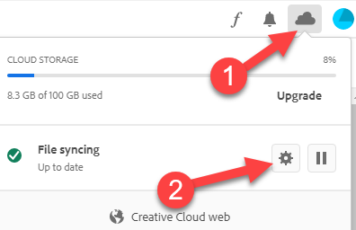
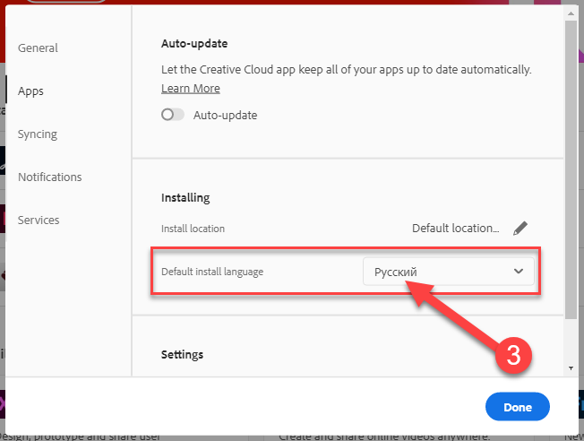
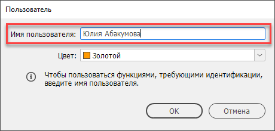
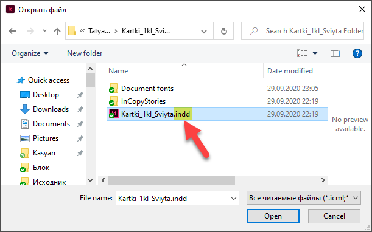
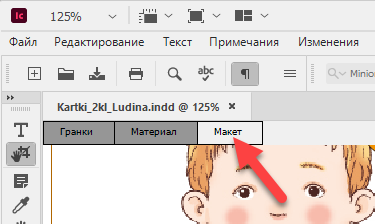
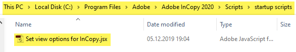
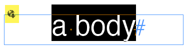
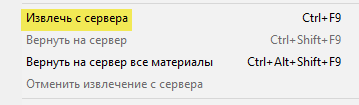
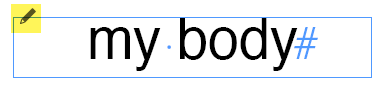
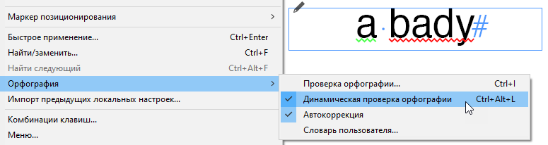

Начало работы в InCopy
Перед установкой InCopy необходимо выбрать язык интерфейса в программе Adobe Creative Cloud: например Русский.


При первом запуске программы надо ввести имя пользователя в меню Файл > Пользователь (это делается только один раз)

Чтобы начать работу откройте файл с расширением indd (документ созданныый в программе InDesign).
Это можно сделать разными способами: например, через меню Файл > Открыть или перетащить файл на InCopy.

Удобнее всего “привязать” этот тип файла к InCopy, чтобы он открывался в нём двойным щелчком по умолчанию.
Все файлы для работы находятся в “облаке” и синхронизируются с вашей локальной папкой Creative Cloud Files.
Таким образом над одними и теми же файлами могут паралельно работать несколько человек: например дизайнер и редактор.
После открытия файла, выберите вкладку Макет.

Для автоматического её открытия, настоятельно рекомендую загрузить и установить этот скрипт в папку C:\Program Files\Adobe\Adobe InCopy 2020\Scripts\startup scripts

Для начала редактирования, поставте курсор в тот текст (или выделите его), где вы собираетесь вносить правки.
Обратите внимание на значок в левом верхнем углу текстового блока: он означает, что материал доступен для редактирования.

Выберите комманду Файл > Извлечь с сервера.
Теперь значок стал “карандашиком”, что
означает, что вы редактируете этот материал и можете вносить правки.


После окончания правок, чтобы сохранить изменения в данном материале, надо его вернуть на сервер (или вернуть на сервер все материалы, чтобы сохранить изменения во всех отредактированных материалах).
Если вы хотите отменить внессенные правки (закрыть не сохраняя), выберите отменить извлечение с сервера.
Для проверки ошибок, можно включить динамическую проверку орфографии в меню Редактирование.
Места в которых программа подозревает ошибки, подчёркиваются волнистыми линиями: красной для орфографических и зеленой для синтаксических.
Однако это не обязательно означает наличие ошибки: например, просто это слово может отсутствовать в словаре.
